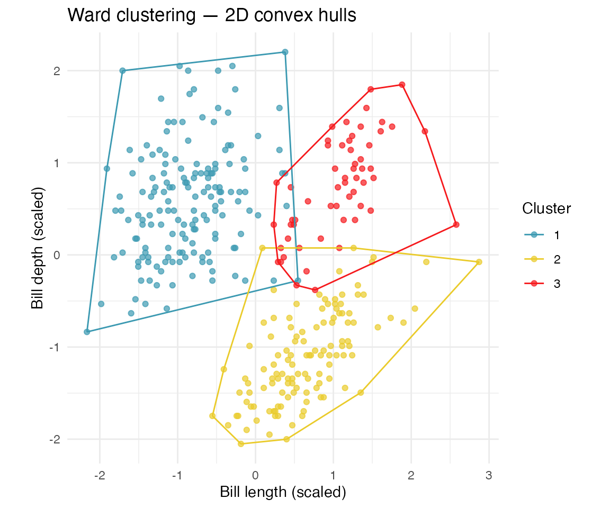

Visualising Clusters in High Dimensions Using Convex Hulls and Tours
Dianne Cook
Source:vignettes/convex-hulls-clusters.Rmd
convex-hulls-clusters.RmdOverview
After fitting a clustering algorithm to high-dimensional data it is
natural to ask: how compact and well-separated are the resulting
groups? In two dimensions a convex hull drawn around each cluster
gives an immediate visual answer. The cxhull package
extends this idea to
dimensions: it computes the full
-D
convex hull of a point cloud, returning the vertices and edges that form
the boundary. Paired with a grand tour from the
tourr package, the hull edges travel with the projection as
the viewpoint rotates, so you can inspect cluster shape and separation
from every angle.
This vignette works through a complete example using the Palmer penguins data set: first in 2D for orientation, then in the full 4D measurement space.
Data and clustering
Using the base penguins data contains four variables
measured on 344 penguins, with missing values removed and variables
standardised to have mean 0 and variance 1. We cluster in all four
dimensions using Ward’s linkage and cut the dendrogram into three
groups.
data(penguins)
penguins_sub <- penguins |>
select(bill_len:body_mass, species) |>
filter(!is.na(bill_len)) |>
rename(bl = bill_len,
bd = bill_dep,
fl = flipper_len,
bm = body_mass) |>
mutate(bl = (bl - mean(bl))/sd(bl),
bd = (bd - mean(bd))/sd(bd),
fl = (fl - mean(fl))/sd(fl),
bm = (bm - mean(bm))/sd(bm))
p_dist <- dist(penguins_sub[, 1:4])
p_hcw <- hclust(p_dist, method = "ward.D2")
cl <- cutree(p_hcw, k = 3)
table(cl)
#> cl
#> 1 2 3
#> 162 123 572D warm-up: convex hulls on two variables
Before looking at the full four-dimensional hull, it helps to see the
idea in a familiar scatterplot. The gen_chull() computes
one 2D hull per cluster and returns a list with the data (including a
cluster colour column) and an edge matrix that identifies which pairs of
points form hull boundaries.
# This function will be available in the mulgar package when cxhull is accepted
# back on CRAN
gen_chull <- function(data, cl) {
n <- nrow(data)
p <- ncol(data)
try (if(p < 2) stop("Number of variables needs to be at least 2."))
#if (!is.factor(cl)) cl = factor(cl)
# Check for duplicates
# Calculation of convex hull cannot have duplicates
dup <- duplicated(data)
cl_data <- data |>
filter(!dup) |>
mutate(cl = cl) |>
arrange(cl)
# Arranging by cluster id is important to define edges
ncl <- cl_data |>
count(cl) |>
arrange(cl) |>
mutate(cumn = cumsum(n))
# Calculate the convex hull for each cluster
phull <- NULL
for (i in unique(cl_data$cl)) {
x <- cl_data |>
dplyr::filter(cl == i)
ph <- cxhull(as.matrix(x[,1:p]))$edges
if (i > 1) {
ph <- ph + ncl$cumn[i-1]
}
ph <- cbind(ph, rep(i, nrow(ph)))
phull <- rbind(phull, ph)
}
phull <- as.data.frame(phull)
colnames(phull) <- c("from", "to", "cl")
phull$cl <- factor(phull$cl)
cl_data$cl <- factor(cl_data$cl)
return(list(data=cl_data,
edges=as.matrix(phull[,1:2]),
edge_clr=phull[,3]))
}
psub2 <- penguins_sub |>
select(bl, bd) |>
mutate(cl = cl)
psub2 <- psub2[!duplicated(psub2),] # cannot handle duplicates
phull2 <- gen_chull(psub2[, 1:2], psub2$cl)
# Build a segment data frame from the edge list
segs2 <- data.frame(
x = phull2$data$bl[phull2$edges[, 1]],
y = phull2$data$bd[phull2$edges[, 1]],
xend = phull2$data$bl[phull2$edges[, 2]],
yend = phull2$data$bd[phull2$edges[, 2]],
cl = phull2$edge_clr
)
ggplot() +
geom_point(
data = phull2$data,
aes(x = bl, y = bd, colour = cl),
size = 1.5, alpha = 0.7
) +
geom_segment(
data = segs2,
aes(x = x, xend = xend, y = y, yend = yend, colour = cl)
) +
scale_colour_discrete_divergingx(palette = "Zissou 1") +
labs(
x = "Bill length (scaled)",
y = "Bill depth (scaled)",
colour = "Cluster",
title = "Ward clustering — 2D convex hulls"
) +
theme_minimal() +
theme(aspect.ratio = 1)
The three clusters overlap somewhat in this projection because we are only seeing two of the four measurement dimensions. This is precisely why the grand tour is so useful.
4D convex hulls
gen_chull() works in any number of dimensions by calling
cxhull() internally. Pass all four measurement columns and
the cluster vector.
phull4 <- gen_chull(penguins_sub[, 1:4], cl)
# How many hull edges are there per cluster?
table(phull4$edge_clr)
#>
#> 1 2 3
#> 260 254 135The object phull4 has the same structure as the 2D
version:
-
phull4$data— the original data with an addedclcolumn
-
phull4$edges— an integer matrix; each row is a pair of row indices whose corresponding points are connected by a hull edge
-
phull4$edge_clr— a vector of cluster labels, one per edge, used for colouring
Viewing the 4D hulls with a grand tour
The tourr package’s animate_xy() function
accepts an edges argument: it draws line segments between
the projected positions of each edge pair as the tour rotates through
4D. Because the hull wraps the outermost points of each
cluster, its projected silhouette in every 2D view faithfully represents
the cluster’s true extent in the corresponding direction.
set.seed(42)
animate_xy(
phull4$data[, 1:4],
col = phull4$data$cl,
edges = phull4$edges,
edges.col = phull4$edge_clr
)Running animate_xy() in an interactive R session opens
an animation window. As the tour progresses you can watch:
- Cluster separation — how far apart the hull silhouettes are in each projection.
- Cluster shape — whether hulls appear elongated (suggesting a dominant direction of variance) or roughly circular.
- Overlap — whether hull boundaries of different clusters intersect in a given view, and whether any projection shows clean separation.
Saving a tour as a GIF
For inclusion in documents or presentations, render the tour to a GIF
with render_gif():
render_gif(
data = phull4$data[, 1:4],
tour_path = grand_tour(),
display = display_xy(
col = phull4$data$cl,
edges = phull4$edges,
edges.col = phull4$edge_clr
),
gif_file = "penguins_chull4d.gif",
frames = 300,
width = 450,
height = 450
)
Interpreting the tour
A few things to look for as the tour runs:
| Observation | Interpretation |
|---|---|
| All three hull silhouettes clearly separated | Strong clustering — the groups differ in that direction |
| Two hulls overlap but one is distinct | Two groups are similar; the third is genuinely different |
| All hulls overlap heavily | The clustering is weak in this projection; keep watching |
| One hull is much larger than the others | That cluster has greater within-group variability |
| An elongated hull that rotates | The cluster has a dominant direction — possibly an outlier sub-group |
For the penguins data you should find that the Gentoo penguin cluster (typically the largest birds) separates cleanly from the other two in most projections, while the Adélie and Chinstrap clusters overlap more in some views and separate in others.
Using a guided tour to find the best separation
The grand tour samples random directions uniformly. A projection pursuit guided tour steers towards projections that maximise a separation index, making it easier to find the viewpoint where clusters are most distinct.
set.seed(42)
animate_xy(
phull4$data[, 1:4],
tour_path = guided_tour(lda_pp(phull4$data$cl)),
col = phull4$data$cl,
edges = phull4$edges,
edges.col = phull4$edge_clr
)lda_pp() uses a linear discriminant analysis index: the
tour converges on the 2D projection that best separates the cluster
means relative to within-cluster spread.
Summary
| Step | Function |
|---|---|
| Compute cluster labels |
hclust() + cutree()
|
| Build -D convex hulls per cluster |
mulgar::gen_chull() (calls cxhull) |
| View with a grand tour | tourr::animate_xy(..., edges = ...) |
| Save to GIF | tourr::render_gif() |
| Find best separating view | tourr::guided_tour(lda_pp(...)) |
The convex hull approach works for any clustering method and any dimensionality: simply swap in different cluster labels or a higher-dimensional data matrix. Where model-based clustering provides elliptical summaries, convex hulls make no distributional assumptions and faithfully capture irregular cluster shapes.
Session information
sessionInfo()
#> R version 4.5.2 (2025-10-31)
#> Platform: aarch64-apple-darwin20
#> Running under: macOS Sequoia 15.7.4
#>
#> Matrix products: default
#> BLAS: /System/Library/Frameworks/Accelerate.framework/Versions/A/Frameworks/vecLib.framework/Versions/A/libBLAS.dylib
#> LAPACK: /Library/Frameworks/R.framework/Versions/4.5-arm64/Resources/lib/libRlapack.dylib; LAPACK version 3.12.1
#>
#> locale:
#> [1] en_US.UTF-8/en_US.UTF-8/en_US.UTF-8/C/en_US.UTF-8/en_US.UTF-8
#>
#> time zone: Australia/Melbourne
#> tzcode source: internal
#>
#> attached base packages:
#> [1] stats graphics grDevices utils datasets methods base
#>
#> other attached packages:
#> [1] colorspace_2.1-2 dplyr_1.2.1 ggplot2_4.0.3 cardinalR_1.0.6
#> [5] tourr_1.2.7 cxhull_0.8.0
#>
#> loaded via a namespace (and not attached):
#> [1] sass_0.4.10 generics_0.1.4 extrafontdb_1.1 digest_0.6.39
#> [5] magrittr_2.0.5 rgl_1.3.36 evaluate_1.0.5 grid_4.5.2
#> [9] RColorBrewer_1.1-3 fastmap_1.2.0 jsonlite_2.0.0 purrr_1.2.2
#> [13] scales_1.4.0 textshaping_1.0.5 jquerylib_0.1.4 cli_3.6.6
#> [17] rlang_1.2.0 base64enc_0.1-6 withr_3.0.2 cachem_1.1.0
#> [21] yaml_2.3.12 otel_0.2.0 tools_4.5.2 Rvcg_0.25
#> [25] vctrs_0.7.3 R6_2.6.1 lifecycle_1.0.5 fs_2.1.0
#> [29] htmlwidgets_1.6.4 ragg_1.5.2 pkgconfig_2.0.3 desc_1.4.3
#> [33] pkgdown_2.1.3 pillar_1.11.1 bslib_0.11.0 gtable_0.3.6
#> [37] data.table_1.18.4 glue_1.8.1 Rcpp_1.1.1-1.1 systemfonts_1.3.2
#> [41] xfun_0.57 tibble_3.3.1 tidyselect_1.2.1 rstudioapi_0.18.0
#> [45] knitr_1.51 farver_2.1.2 extrafont_0.20 htmltools_0.5.9
#> [49] labeling_0.4.3 rmarkdown_2.31 Rttf2pt1_1.3.14 compiler_4.5.2
#> [53] S7_0.2.2